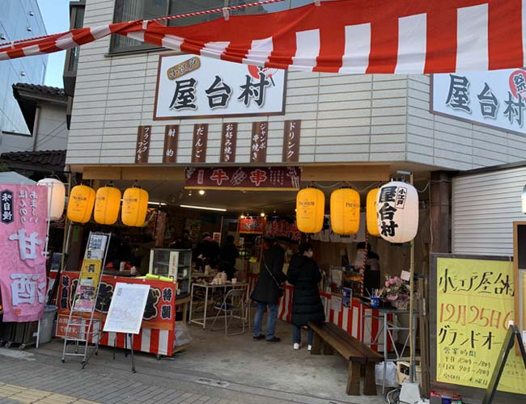
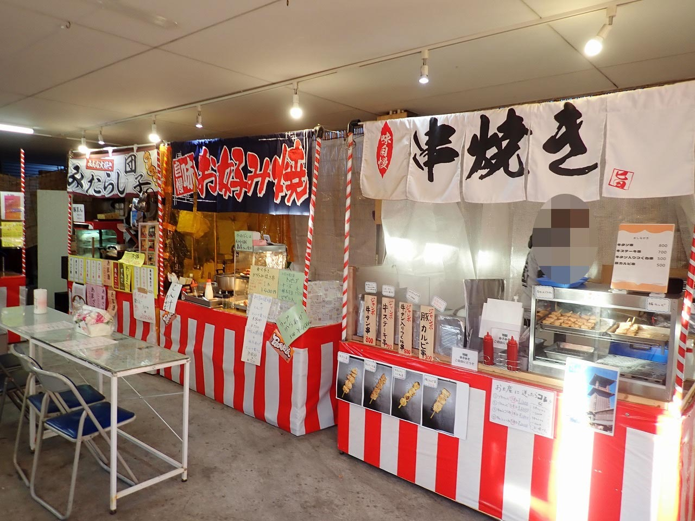

令和3年12月25日に、「小江戸 屋台村 祭」をオープン致しました。 この施設は、川越の観光の新名所として、街を盛り上げられたらと思い開業しました。 コロナ禍で中々旅行にも行けない方にも都心から電車で30分程と、あまり遠くなく気軽に観光が楽しめます。 屋台は、射的・スマートボール・団子・お好み焼き・ジャンボ串焼き・ドリンク等、お子様も喜んで頂ける物も入っています。 川越へお越しの際は、是非一度お立ち寄り下さい。
写真
